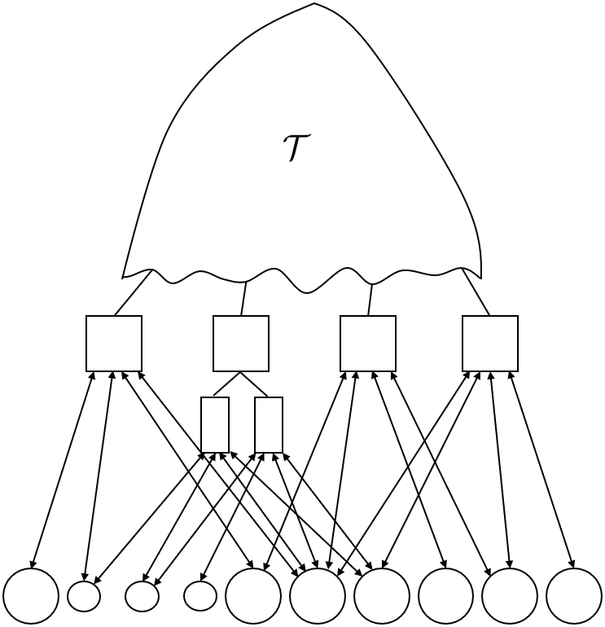
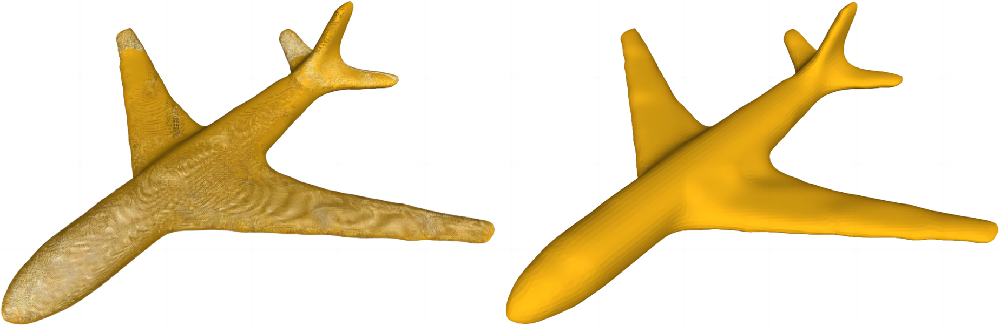

潘茂东的主页
潘茂东，副教授，博士生导师
中国数学会计算机数学专委会委员 中国工业与应用数学学会几何设计与计算专委会委员 中国计算机学会计算机辅助设计与图形学专委会委员 联系方式：mdpan{at}mail.ustc.edu.cn 或者 maodong{at}nuaa.edu.cn |
研究方向
CAD/CAE一体化
计算几何、计算机图形学
网格生成
几何深度学习
学术简介
教育和工作经历
-
副教授 (2021.1至今):
南京航空航天大学数学学院 -
访问教授 (2023.11-2023.12):
奥地利林茨大学
合作导师: Bert Jüttler -
博士后 (2017.6-2020.12):
中国科学技术大学数学科学学院
合作导师: 陈发来 -
博士后 (2020.3-2020.9):
奥地利科学院 RICAM 研究所
合作导师: Bert Jüttler -
博士后 (2019.3-2020.2):
奥地利林茨大学
合作导师: Bert Jüttler -
硕博连读 (2012.9-2017.6):
中国科学技术大学数学科学学院
导师: 陈发来 -
本科 (2008.9-2012.7):
南京师范大学数学科学学院
荣誉与奖励
江苏省高层次创新创业人才引进计划项目
江苏省工业与应用数学学会青年科技奖
江苏省优秀本科毕业设计指导老师
南京航空航天大学“长空之星”
江苏省工业与应用数学学会年会优秀报告奖
南京航空航天大学优秀团学导师提名奖
南京航空航天大学研究生课程教学创新大赛特等奖
江苏省高校第十届数学基础课青年教师授课竞赛三等奖
讲授课程
《线性代数》，本科生，2024年秋季
《高等工程数学》，研究生，2024年秋季
《计算方法》，本科生，2024年春季
《线性代数》，本科生，2023年秋季
《高等工程数学》，研究生，2023年秋季
《计算方法》，本科生，2023年春季
《计算方法》，本科生，2022年秋季
《高等工程数学》，研究生，2022年秋季
《计算方法》，本科生，2022年春季
《计算几何》，本科生，2022年春季
《高等工程数学》，研究生，2021年秋季
代表性论文
|  |
Algorithms and Data Structures for Cs-smooth RMB-splines of Degree 2s+1 |
|
G1-smooth Planar Parameterization of Complex Domains for Isogeometric Analysis |
|
|
Local Linear Independence of Bilinear (and Higher Degree) B-splines on Hierarchical T-meshes |
|
 |
Implicit Dynamic Buckling Analysis of Thin-shell Isogeometric
Structures Considering Geometric Imperfections |
|
Constructing Planar Domain Parameterization with HB-splines via Quasi-conformal Mapping |
|
|
Fast Formation of Matrices for Least-Squares Fitting by Tensor-Product Spline Surfaces |
|
|
Penalty Function-based Volumetric Parameterization Method for Isogeometric Analysis |
|
|
Efficient Matrix Computation for Isogeometric Discretizations with Hierarchical B-splines in Any Dimension |
|
 |
Fast Formation of Isogeometric Galerkin Matrices via Integration by Interpolation and Look-up |
 |
Volumetric Spline Parameterization for Isogeometric Analysis |
 |
Spectral Mesh Segmentation via ℓ0 Gradient Minimization |
|
Low-rank Parameterization of Volumetric Domains for Isogeometric Analysis |
|
|
Boundary Correspondence of Planar Domains for Isogeometric Analysis Based on Optimal Mass Transport |
|
 |
Low-rank parameterization of planar domains for isogeometric analysis |
|
Phase-field guided surface reconstruction based on implicit hierarchical B-splines |
|
|  |
Compact Implicit Surface Reconstruction via Low-rank Tensor Approximation |
图书章节
 |
基于径向基函数隐式表示的几何模型重建 |
学术软件
-
BoundaryCorrespondenceOT：该软件用于求解等几何分析中的边界对应与区域参数化问题，目前已被国内外多个课题组使用
学术报告
-
"面向复杂几何模型的曲面重建与区域参数化技术", 南京信息工程大学, 南京, 9月14日, 2024.
-
"Efficient Matrix Assembly for Isogeometric Analysis", 南京师范大学, 南京, 8月13日, 2024.
-
"等几何分析方法的理论与应用", 中国图学学会第七届“奋发图强”青年科学家论坛，大会特邀报告, 大连, 7月19-7月21日, 2024.
-
"面向CAD/CAE一体化的关键几何计算理论与方法", 第十三届江苏省计算机大会，大会特邀报告, 南京, 6月14-6月16日, 2024.
-
"等几何分析方法及相关数学问题", 中国数学会 2023 年学术年会, 大连, 12月22-12月26日, 2023.
-
"面向CAD/CAE一体化的关键几何计算理论", 江苏省工业与应用数学学会 2023 年学术年会, 大会特邀报告, 南京, 12月22-12月24日, 2023.
-
"Efficient Matrix Assembly for Isogeometric Analysis", 等几何分析与有限元研讨会, 国家天元数学东北中心, 吉林大学, 长春, 7月20-22日, 2023.
-
"Sum-factorization Techniques in Isogeometric Analysis", 第十三届中国数学会计算数学年会, 南京, 7月15-7月19日, 2023.
-
"Domain Parameterization and Efficient Matrix Assembly for Isogeometric Analysis", 第十三届中国数学会计算机数学大会, 大会特邀报告, 大连, 6月15-6月18日, 2023.
-
"CAD/CAE一体化技术及相关数学问题", 2023 江苏省计算数学学术年会, 大会特邀报告, 盐城, 5月26-5月28日, 2023.
-
"CAD/CAE一体化技术及相关数学问题", 第二十届全国流体力学数值方法研讨会, 南京, 3月31-4月2日, 2023.
-
"Volumetric Domain Parameterization and Matrix Assembly for Isogeometric Analysis", 江苏省工业与应用数学学会2021年年会, 江南大学, 无锡, 9月2-3日, 2022, Online Talk.
-
"Fast Formation of Matrices for Least-Squares Fitting by Tensor-Product Spline Surfaces", Symposium on Solid and Physical Modeling, Singapore, June 27-29, 2022, Online Talk.
-
"Efficient Matrix Computation for Isogeometric Discretizations with Hierarchical B-splines in Any Dimension", Virtual International Conference on Isogeometric Analysis, Lyon, France, September 26-29, 2021, Online Talk.
-
"Planar Domain Parameterization with Hierarchical B-splines", 16th U.S. National Congress on Computational Mechanics, July 25-29, 2021, Online Talk.
-
"Fast Formation of Matrices in Isogeometric Analysis", Workshop on the Theory and Application of Isogeometric Analysis, 国家天元数学东北中心, 吉林大学, 长春, 7月20-22日, 2021.
-
"Efficient Matrix Assembly in Isogeometric Analysis", 苏州大学, 苏州, 5月11-12日, 2021.
-
"Domain Parameterization for Isogeometric Analysis", 南京应用数学中心, 南京, 4月29日, 2021.
-
"Domain Parameterization for Isogeometric Analysis", 线上报告, 华南理工大学, 广州, 11月20日, 2020.
-
"Fast Formation of Isogeometric Galerkin Matrices via Integration by Interpolation and Look-up", 2nd workshop of the ERC project CHANGE, Sestri Levante, (GE), Italy, November 25-27, 2019.
-
"Integration by Interpolation, Look-up and Sum Factorization for Galerkin-based Isogeometric Analysis", 15th NFN seminar, bifeb, Strobl, Austria, October 1-3, 2019.
-
"Low-rank Parameterization of Volumetric Domains for Isogeometric Analysis", Symposium on Solid and Physical Modeling 2019, Simon Fraser University, Vancouver, Canada, June 17-21, 2019.
-
"Volumetric Spline Parameterization for Isogeometric Analysis", SIAM Conference on Computational Geometric Design 2019, Simon Fraser University, Vancouver, Canada, June 17-21, 2019.
-
"Phase-field Guided Surface Reconstruction Based on Implicit Hierarchical B-splines", International Conference on Geometric Modeling and Processing 2017, 厦门, 4月17-19日, 2017.
-
"Compact Implicit Surface Reconstruction via Low-rank Tensor Approximation", The International Geometry Summit 2016, Freie Universität Berlin, Berlin, Germany, June 20-24, 2016.
-
"A Low-rank Surface Reconstruction Algorithm Based on Hierarchical Implicit Tensor-product B-spline Surfaces", 第七届全国计算机数学大会, 中国科学技术大学, 合肥, 10月30-11月2日, 2015.
学术服务
中国数学会计算机数学专委会委员
中国工业与应用数学学会几何设计与计算专委会委员
中国计算机学会计算机辅助设计与图形学专委会委员
GAMES 执行委员会委员
美国数学会评论员
江苏省计算数学学会理事
全国几何设计与计算学术会议 (GDC 2022/2023/2024) 程序委员会委员
中国计算机图形学大会 (Chinagraph 2024) 程序委员会委员
多次担任 SIAM Journal on Numerical Analysis, Computer Methods in Applied Mechanics and Engineering, International Journal for Numerical Methods in Engineering, Computer-Aided Design, Computer Aided Geometric Design, Journal of Computational Physics, IEEE Computer Graphics and Applications, Journal of Computational and Applied Mathematics, Applied Numerical Mathematics, The Visual Computer, Computers & Mathematics with Applications, Journal of Computational Design and Engineering, Computer Modeling in Engineering & Sciences, Journal of Systems Science & Complexity, Mathematics 等期刊的审稿人
欢迎访问我的学术主页!